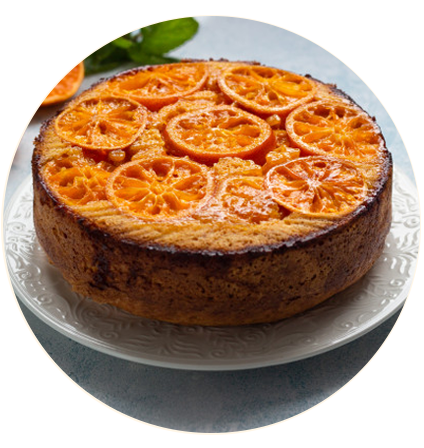
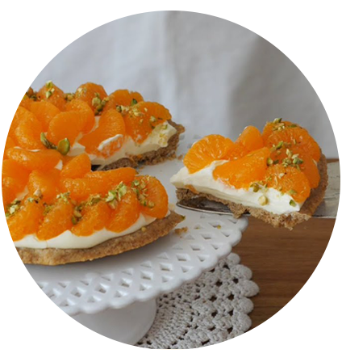
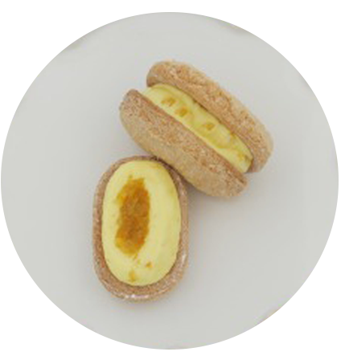
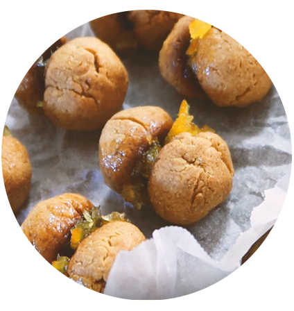
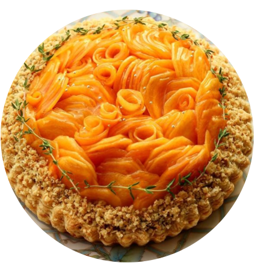
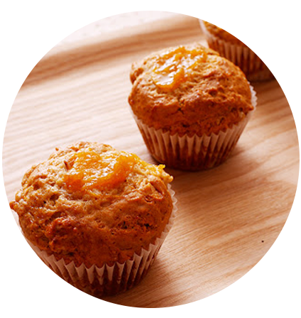

봄
여름
가을
늦가을
Late Fall menu
귤, 유자, 감
새콤 새콤 귤!
귤은 9월~12월까지만 나옵니다.
귤 초코 케이크
재료 귤, 초콜렛, 박력분, 생크림, 버터, 설탕
상큼한 귤과 초코의 조화로움
상큼한 귤이 잔뜩 들어갑니다.


귤 타르트
재료 귤, 버터, 크림치즈, 설탕, 소금, 계란, 생크림
크림치즈 섞인 생크림과 상큼한 귤을
바삭한 타르트지와 함께 먹어보세요.
레몬 같은 상큼함! 유자
유자는 11월~12월까지만 나옵니다.
유자 다쿠와즈
재료 유자, 중력분, 생크림, 설탕, 버터, 소금, 계란
폭신폭신한 다쿠아즈와 유자청의 만남
많이 달지 않아 어른들도 많이 찾는 베스트아이템


유자샌드 쿠키
재료 재료
유자, 박력분, 설탕, 버터, 소금, 계란, 우유, 바닐라 익스트렉
상큼한 유자크림과 홈런볼같은 식감의
과자가 소소하게 간식용으로 좋아요
달달하고 아삭한 식감의 단감!
감은 9월~11월까지만 나옵니다.
단감 타르트
재료 단감, 버터, 중력분, 계란, 설탕, 크림치즈
감을 얇게 썰어올려 독특한 식감을 표현했습니다.
크림치즈와 환상의 조화


단감 머핀
재료 단감, 버터, 박력분, 설탕, 바닐라 익스트렉
단감이 콕콕 박혀 촉촉한 머핀은
다양한 식감을 경험하게 합니다.